| BODA DE ANDRÉS Y SUSANA |
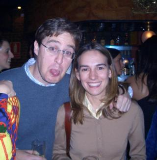
Andrés y Susana se van a casar este Sábado 24 de Enero en la Iglesia del Colegio del Pilar. Despues de ... ¿15 años de noviazgo?... por fin se nos casan :-)
La despedida fue mixta y asistieron tanto amigos del novio como de la novia. Pero lo mejor es que veamos algunas fotos.
En la izquierda, nuestras dos azafatas, Teresa y Mercedes, nos muestran la mesa en la que se celebró la cena. A la derecha vemos a los organizadores: Pablo y David. "Nos vamos a poner hasta el culo de comer"
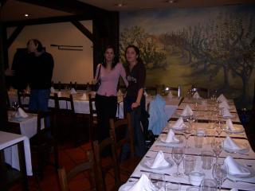 |
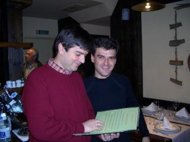 |
Poco a poco fueron llegando todos. Podemos ver a Ernesto, un trozo de Arsenio, la espalda de Nuria, Carolina (hermana de Andrés), Monica... y también a Carlos y Noemí, a puntito de ser padres (Noemí salía de cuentas ese mismo día).
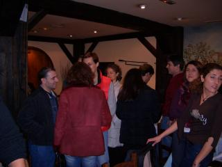 |
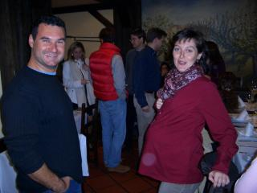 |
...Nacho y Guillermo junto a la Novia... y por supuesto el Novio
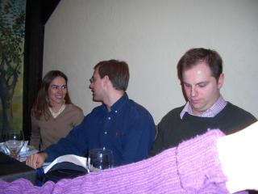 |
Parece que el Novio se lo está pasando muy bien... ¿Cuanto vino y sidra habrá tomado?
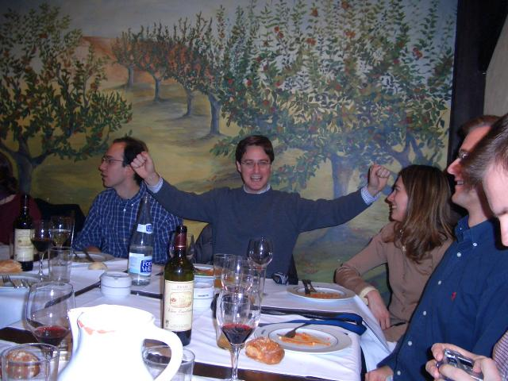
Aquí vemos a Nacho tomando un gran vaso de Sidra. Sí, parece fanta de naranja, pero es Sidra. También podemos ver a Cristina, que se descojona y a Mariano, intentando disimular los efectos devastadores de la Sidra
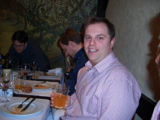 |
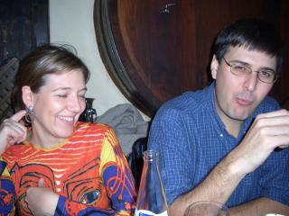 |
La cena termina... algunos se van a su casa. Vemos a la novia con Mercedes, David, Pablo y Jose Luis. En la foto de la Derecha estamos Arsenio, Ernesto y un servidor junto al Novio.
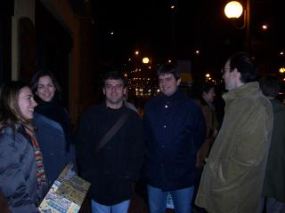 |
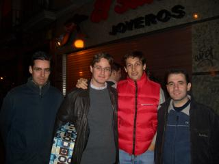 |
...pero otros continuamos la marcha!!!! Como por ejemplo Guillermo y David, que están en la fase de "exaltación de la amistad" o Nacho que está quemando las calorías de la Sidra
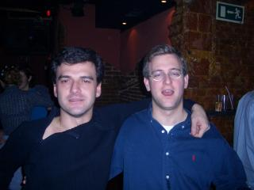 |
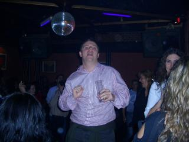 |
Víctor y Sole intentan guardar la compostura... lo mismo que Mónica y Teresa... (¡Nacho! ¿Cómo es que sales en casi todas las fotos?)
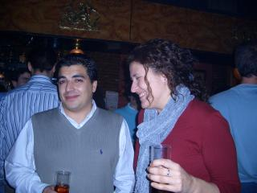 |
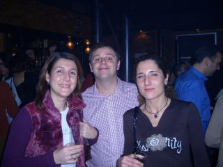 |
Cristina y Mariano no se cortan: "¡¡¡Brindemos a la salud de los novios!!!". Jose Luis posa junto a los novios. Observad el "agarre" en cadena: Jose Luis agarra a Andrés y Andrés a Susana.
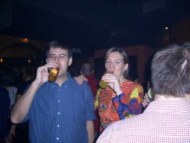 |
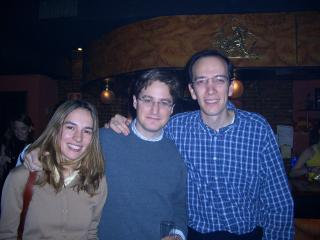 |
A última hora todos nos queríamos hacer fotos con los novios: a la izquierda Cristina y Mariano (¿Dónde están vuestras copas?) y a la derecha Mercedes y un servidor. Mirad cómo agarra Andrés a Susana: "Ya no tienes escapatoria!!" :-))
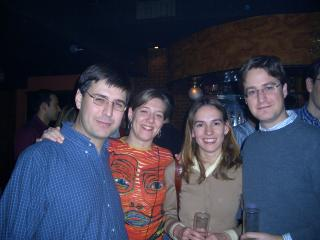 |
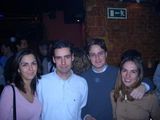 |
Sole y Víctor hacen lo propio. A la derecha foto familiar: Susana, Andrés y el Cuñaoooo
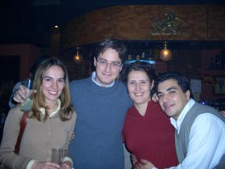 |
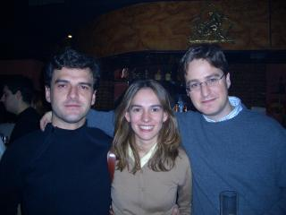 |
..Teresa, Nacho, y a la derecha Guillermo y Mónica
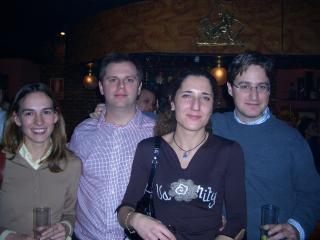 |
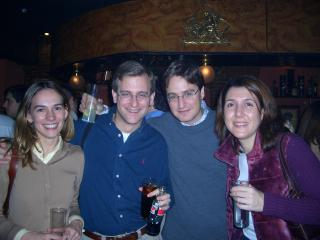 |
..... y aquí vemos a los dos CRACKS de la NOCHE.
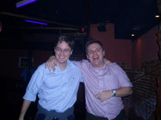
Una chica se acerca a Nacho y le dice: "Por favor, dónde está el baño" y Nacho responde: "Las vacas a la izquierda"
Puedes encontrar un resumen en este enlace
| Fotos para descargar (Despedida) |
| fotos1.zip (2.1MB) | Parte 1 |
| fotos2.zip (2.9MB) | Parte 2 |
| fotos3.zip (2.9MB) | Parte 3 |
| fotos4.zip (3.0MB) | Parte 4 |
| fotos5.zip (2.6MB) | Parte 5 |
| fotos6.zip (2.9MB) | Parte 6 |
| fotos7.zip (2.9MB) | Parte 7 |
| fotos8.zip (2.9MB) | Parte 8 |
| fotos9.zip (2.9MB) | Parte 9 |
| fotos10.zip (2.1MB) | Parte 10 |